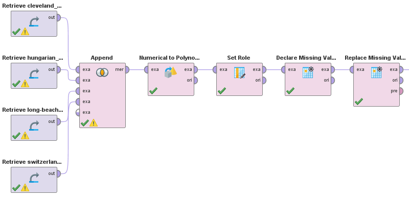

Heart disease prediction
Heart disease has a high prevalence. Approximately 3-5% of hospital admissions are related to these incidents. The costs are very high, reaching up to 2% of total health costs in developed countries. Building an effective disease management strategy requires the analysis of a large amount of data, the early detection of disease, assessment of severity and early prediction of adverse events. This will inhibit the progression of the disease, improve the quality of life of patients and reduce the associated medical costs.
The objective of this case study is to generate a Machine Learning model that is capable of predicting the existence of said heart diseases. To this end, the tool RapidMiner will be used, and the model will be based on the UCI Heart Disease dataset. This dataset is comprised of 4 databases referring to the diagnosis of heart disease, from:
- Cleveland Clinic Foundation
- Hungarian Institute of Cardiology, Budapest
- V.A. Medical Center, Long Beach, CA
- University Hospital, Zurich, Switzerland.
The databases have the same sample format, and 76 attributes in total. For example, some of them are:
- age: Patient's age
- sex: Patient's sex
- cp: Type of chest pain
- trestbps: Resting blood pressure
- smoke: Whether the patient smokes or not
- thalach: Max heart rate during a test exercise.
The target variable (num) represents the diagnosis. It has 5 possible values. The value 0 represents absence of disease heart rate, and values 1, 2, 3, and 4 represent different degrees of disease.
Data preprocessing
The files from the 4 institutions separated the data in more lines than necessary, which prevented importing them easily in RapidMiner. Also, none of the files contained a header row for the attribute names. To solve both of these problems, the following Python code was executed for each of the 4 files:
def parse_file(readFilename, writeFilename):
headerRow = "id ccf age sex painloc painexer relrest pncaden cp trestbps ..."
readfile = open(readFilename, 'r', errors='ignore')
writefile = open(writeFilename, 'w')
writefile.write(headerRow)
writeRow = ""
for row in readfile:
writeRow += row
if ("name" in row):
writefile.write(writeRow)
writeRow = ""
else:
writeRow = writeRow.rstrip()
writeRow += " "
readfile.close()
writefile.close()
After that processing, the files were imported into RapidMiner. Since all 4 have the same format, it was possible to simply join them using the "Append" operator. The metadata of these datasets indicates that the numeric value -9 is used to represent missing values in attributes, so it was also necessary to replace all occurrences of that value with missing values, to later be able to handle them more easily.
Although all the attributes are numerical, some of them are continuous and others discrete. Missing values in continuous attributes were replaced by the mean of that attribute. This could be interpreted as, when in doubt, a patient is "average". Similar reasoning is used for discreet attributes; in most of them, the values represent different classes indicative of the patient's health. It is assumed that patient is "healthy" on an attribute if the value does not exist.
Modelling
To build the model, the classification algorithm Naive Bayes was used. Decision Trees was considered as another alternative, but for this dataset in particular, there are diagnoses that are much more rare than others, therefore there is a risk that these cases will be lost with the pruning of the tree, causing the model to not recognize them well. At the same time, if you avoid pruning the tree and increase its maximum height, it is likely to overfit this data.
To determine the best subset of attributes to consider, RapidMiner's "Optimize Selection" operator was used. This operator performs a feature selection with an evolutionary algorithm (the selection algorithm that generally gets the best results). 44 of the 76 attributes were selected. Finally, a Cross Validation was performed on the model to evaluate its accuracy. The performance was as follows:
PerformanceVector:
accuracy: 77.86% +/- 3.82% (micro average: 77.86%)
ConfusionMatrix:
True: 0 2 1 3 4
0: 401 0 1 0 6
2: 2 10 6 12 0
1: 0 76 175 41 0
3: 1 44 9 79 1
4: 0 0 0 0 35
The model had a precision of approximately 78%, which is a decent result. Observing the confusion matrix, we can also see that the model was particularly good at distinguishing cases where the target variable is 0 from the other cases. Going back to the meaning of said variable, the value 0 represents absence of heart disease, and values 1, 2, 3 and 4 represent different degrees of disease. This means that a model like this one can be of great real utility; it could be used, for example, in a hospital as a first "filter" to know if a patient has a heart disease or not. If he model predicts yes, then the patient is referred to a doctor that can better diagnose the degree of disease. This way, a lot of time and resources would be saved from all the consultations of healthy patients.
Other experiments
Several other Naive Bayes models were developed with the aim of experimenting using different subsets of attributes. (The models were made with and without Laplace correction (the single parameter of the Naive Bayes operator). In all cases, the model with the correction was slightly more accurate than the one without had. Therefore, all models were made with that correction.) Two of the models are described below as an example.
One of the models was made taking the 14 attributes recommended in the metadata. These attributes are the most used in published experiments on these databases. The model performance is as follows:
PerformanceVector:
accuracy: 51.83% +/- 3.92% (micro average: 51.84%)
ConfusionMatrix:
True: 0 2 1 3 4
0: 335 13 59 20 4
2: 17 33 40 36 11
1: 37 39 63 27 8
3: 11 31 24 32 16
4: 4 14 5 17 3
Another model was made taking all 76 attributes of the dataset. The performance of the model is as follows:
PerformanceVector:
accuracy: 74.08% +/- 2.50% (micro average: 74.08%)
ConfusionMatrix:
True: 0 2 1 3 4
0: 392 0 0 0 6
2: 0 16 12 27 0
1: 9 71 168 50 0
3: 3 43 11 55 1
4: 0 0 0 0 35
None of the experiments reached the precision of the first model, further indicating that the selection of attributes was indeed optimal.